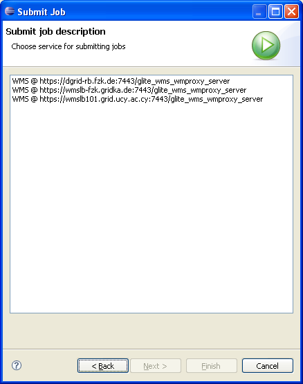

Grid Job Management
How to implement MY Grid Job management system?
- The execution of Jobs and their monitoring is performed by
services on the Grid. Current implementations for
- gLite WMS 3.1 and gLite L&B 3.1
- GRIA services
UI Components
The Grid Job submission Wizard allows to submit jobs to the specific middleware.

Important Extension points
Core extension point
eu.geclipse.core.gridElementCreator- This extension point can be used to define middleware
specific Job Service creator.
eu.geclipse.core.jobs.jobID- The specific jobID implementation can be provided with this extention point
eu.geclipse.core.jobs.jobStatus- The specific jobStatus implementation can be provided with this extention point
UI extension point
eu.geclipse.ui.jobSubmissionWizard- Defines custom wizard and job creator which should be used for middleware specific job submission.
Interfaces to implement
eu.geclipse.core.model.IGridJobCreator- Implement this to represent middleware specific Grid Job Creator. This is not required as the general eu.geclipse.core.jobs.GridJobCreator can be used
eu.geclipse.core.model.IGridJobService- Implement this to provide middleware specific job service
Classes to extend
eu.geclipse.core.jobs.GridJobID- Extend this class to implement middleware specific implementation of job id which can be handled by eu.geclipse.core.jobs.GridJob
eu.geclipse.core.jobs.GridJobStatus- Extend this class to implement middleware specific implementation of job status which can be handled by eu.geclipse.core.jobs.GridJob